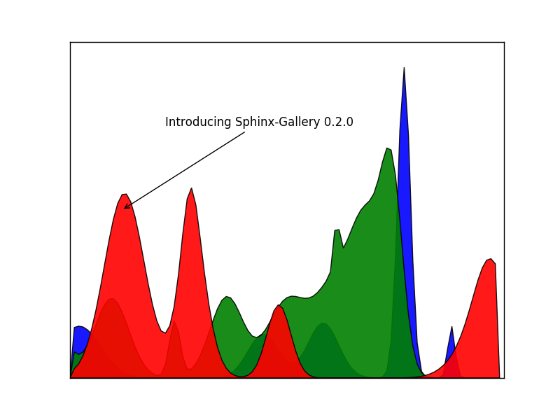

Note
Click here to download the full example code or run this example in your browser via Binder
Sphinx-Gallery introduction¶
Plot to present Sphinx-Gallery using itself to display its version.
# Code source: Óscar Nájera
# License: BSD 3 clause
import numpy as np
import matplotlib.pyplot as plt
import sphinx_gallery
np.random.seed(32)
def layers(n, m):
"""
Return *n* random Gaussian mixtures, each of length *m*.
"""
def bump(a):
x = 1 / (.1 + np.random.random())
y = 2 * np.random.random() - .3
z = 13 / (.1 + np.random.random())
for i in range(m):
w = (i / float(m) - y) * z
a[i] += x * np.exp(-w * w)
a = np.zeros((m, n))
for i in range(n):
for j in range(12):
bump(a[:, i])
return np.abs(a)
fig = plt.figure()
d = layers(3, 100)
x = range(100)
for mixture in d.T:
mixture[[0, -1]] = 0.
plt.fill(x, mixture, alpha=0.9)
plt.annotate('Introducing Sphinx-Gallery ' + sphinx_gallery.__version__,
xy=(12, 4), arrowprops=dict(arrowstyle='->'), xytext=(22, 6))
plt.xticks([])
plt.yticks([])
plt.show()
Total running time of the script: ( 0 minutes 0.142 seconds)
Estimated memory usage: 8 MB